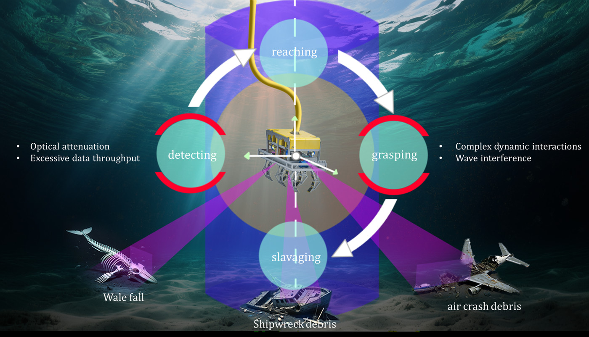
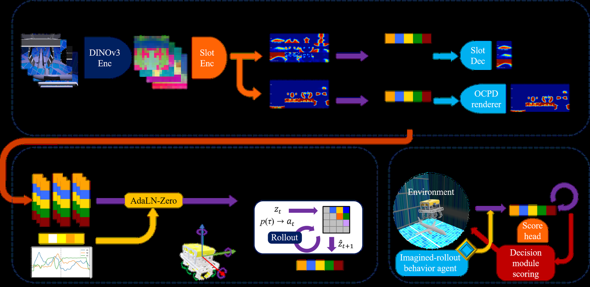
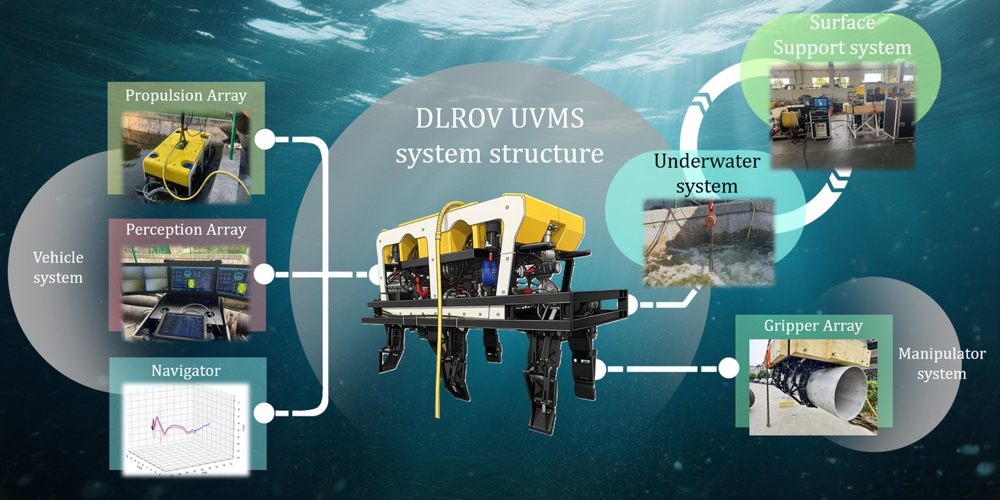

Underwater C³-JEPA: An Object-Centric Cross-View World Model for ROV Salvage

I am a master's student at Shanghai Jiao Tong University, advised by Dr. Xuyang Wang. My work is on world models for robot manipulation in the underwater setting — building predictors that reason about how a salvage ROV and its grippers interact with an object when vision is poor, contact is unobserved, and the vehicle's dynamics lag behind its commands.
Before that I studied Naval Architecture and Ocean Engineering at Dalian University of Technology, where I worked on bionic amphibious vehicles and linkage-driven grippers.


Underwater Engineering Institute, Shanghai Jiao Tong University
800 Dongchuan Road, Minhang District, Shanghai 200240, China